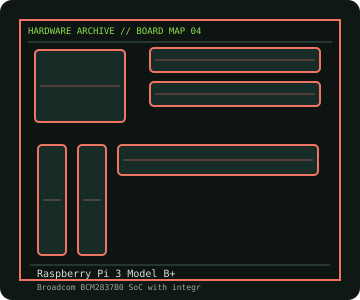

[ INDIVIDUAL COMPONENT // MOTHERBOARDS ]
Raspberry Pi 3 Model B+
BCM2837B0 Arm SBC with 1 GB soldered RAM, dual-band Wi-Fi, Bluetooth 4.2 and four USB 2.0 ports. This entry identifies one product model; revision and firmware qualifications are stated below.

IDENTIFICATION: Check the PCB silkscreen, printed revision, assembly code, and firmware identifier on the actual board. Similar model names and PCB revisions may use different specifications or firmware.
Specifications
| Catalog subcategory | Integrated and compact boards |
|---|---|
| Exact board / model | Raspberry Pi 3 Model B+ |
| Era / platform | Raspberry Pi 3 generation single-board computer, 2018 |
| CPU and socket | Broadcom BCM2837B0, 1.4 GHz quad-core 64-bit Arm Cortex-A53; VideoCore IV graphics |
| Chipset / controller | Broadcom BCM2837B0 SoC with integrated platform I/O |
| Memory | 1 GB LPDDR2 SDRAM, soldered and not upgradeable |
| Expansion and connectivity | microSD boot/storage; 40-pin GPIO, CSI camera and DSI display connectors; four USB 2.0 ports, full-size HDMI, 3.5 mm composite/audio jack; Gigabit Ethernet over USB 2.0 |
| Firmware | Boot firmware and OS support are maintained by Raspberry Pi; use a power supply and OS image compatible with this generation. It has no PC-style replaceable BIOS chip. |
Compatibility and revision notes
2.4/5 GHz 802.11ac Wi-Fi and Bluetooth 4.2/BLE are onboard. The wired Ethernet connector is Gigabit-rated but practical throughput is limited by its USB 2.0 connection. Raspberry Pi 3 Model B cases/accessories may differ from the B+ thermal and port layout.
Physical socket fit alone does not establish compatibility. Verify the exact processor support list, minimum BIOS, memory population rules, case dimensions, power connectors and shared-lane behavior in the cited model documentation before installation.
Preservation and repair
Avoid flexing the PCB or probing the fine-pitch CSI/DSI connectors while powered. Inspect the microSD socket, micro-USB power connector and soldered Ethernet/USB jack for mechanical stress; check supply voltage under load before diagnosing random resets.
For an archive record, photograph the PCB and labels before cleaning; note serial/date codes, BIOS/BMC versions, accessories, known faults, repairs, and test conditions. Use ESD-safe handling and never apply power with loose conductive hardware beneath the board.
Sources & further reading
- Raspberry Pi — Raspberry Pi 3 Model B+ product briefManufacturer product brief for the B+ model.
- Raspberry Pi — Raspberry Pi 3 Model B+ product pageManufacturer product identification and overview.
Manufacturer model documentation is the primary reference; confirm the document revision and board markings when specifications vary by revision or SKU.